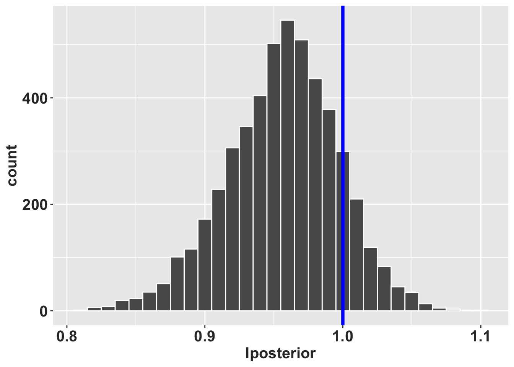

# hidden code to produce figures
library(DiagrammeR)
library(Rage)
library(gt)
matA <- rbind(
c(0.0, 0.0, 0.0),
c(1.0, 0.0, 0.0),
c(0.0, 0.0, 0.9)
)
stages <- c("semillas", "plantulas", "adultos")
title <- NULLMétodo bayesiano para calcular transiciones y fertilidades
Por: Raymond L. Tremblay
El objetivo de este capítulo es mostrar algunos de los problemas a los que nos enfrentamos al estimar parámetros de matrices poblacionales de especies raras, de especies con tamaños de muestra limitados o de especies con transiciones poco frecuentes. Particularmente, se muestran los problemas asociados a las matrices de especies raras y se propone un método basado en estadística bayesiana que permita estimar parámetros que representen de manera realista el ciclo de vida de la especie de estudio.
Considere un primer ejemplo donde sabemos que la especie de interés tiene tres etapas en su ciclo de vida (semillas, plántulas y adultos) de las cuales sólo la etapa más grande (i.e., adultos) produce semillas. El primer paso para llevar a cabo el análisis es evaluar las etapas del ciclo de vida para determinar cuáles de éstas determinan mayoritariamente la dinámica poblacional de la especie así como evaluar que cuales son más prácticas de medir para llevar a cabo una óptima colecta de datos.
En la primera figura podemos observar el ciclo de vida considerado para esta especie hipotética. Una vez definido el ciclo de vida de la especie procedimos a colectar datos de campo y a estimar las transiciones y la fertilidad. Los resultados obtenidos mostraron lo siguiente:
- Las semilla germinaron y transitaron a la etapa de plántula?
- ¿Es realista que todas las semillas germinen?
- ¿Por qué no se encontraron semillas que NO germinen?
- Todos las plántulas murieron antes de llegar a la etapa de adulto.
- ¿Es realista que todas las plántulas se mueran durante el ciclo de vida de una especie?
Aquí podemos observar dos resultados no realistas de las matrices de proyección poblacionales (MPM). En estos casos ningún individuo muere o que todos se mueren, sin embargo, estos resultados están afectados por el tamaño de muestra. Suponga que para nuestra especie de interés solamente se tuvo acceso a 4 plantas adultas ya que es un especies rara, si estos 4 individuos sobreviven obtendríamos una supervivencia del 100%. Es decir, obtendríamos que ¡los individuos son inmortales! Claramente este resultado se debe más a un error debido al reducido tamaño de muestra que al ciclo de vida de la especie ya que por pura probabilidad no se encontró ninguna planta que se muera. Entonces, es importante reconocer cuando los parámetros que estimamos a partir de los datos colectados no reflejan la historia de vida típica de la especie.
El paquete raretrans ayuda a resolver estos problemas y a estimar parámetros más realistas al considerar explicítamente el ciclo de vida típico de la especie estudiada.
Algunas características de ciclos de vida biológicamente NO realistas:
- Todas las semilla sobreviven y pasan a plántulas
- Ninguna plántula sobrevive y/o pasa a ser adulto -La mayorías de los adultos se quedan como adulto pero ninguno produce semillas
NOTE que es posible que los datos colectados en campo arrojen estos valores, pero muchas veces esas observaciones son resultado de tamaños de muestra limitados.
plot_life_cycle(matA, stages = stages)Considera el siguiente ejemplo:
- Se quiere estudiar a los árboles del género Sequoia. Si se muestrean los árboles grandes (con un dbh de > xxx) aunque la muestra sea de más de 1000 individuos es posible que no encontremos ningun individuo que muera entre un año y otro. Con estos datos podríamos determinar que la supervivencia para esta especie es del 100%. Sin embargo, es necesario considerar que 1) si el tamaño de muestra aumenta a 10,000 o 100,000 árboles se podrían haber detectado uno o más individuos muertos, 2) la mortalidad en plantas frecuentemente está relacionada con el tamaño del individuo, por lo que, entre más grande es un individuo menor es la probabilidad de morir y 3) que la mortalidad en este tipo de individuos puede ser dependiente del tiempo, es decir, en años con variación biótica o abiótica muy alta la mortalidad puede aumentar. Si toma en cuenta estas consideraciones en el estudio de Sequoias la mortalidad en estos individuos sería baja pero no 0.
Tomando en cuenta los ejemplos anteriores podemos concluir que es importante considerar la biología de la especie, el método de muestreo y el tamaño de muestra para llevar a cabo un análisis de datos correcto.
El paquete “raretrans”
El manuscrito Tyre, RL, and Perez (2024) contiene los datos originales y el uso del paquete y se encuentra en https://doi.org/10.1016/j.ecolmodel.2021.109526.
Population projections from holey matrices: Using prior information to estimate rare transition events
Resumen
Las matrices de proyección poblacional (MPM) son una herramienta común para predecir el comportamiento de la población a corto y largo plazo. Sin embargo, cuando se utilizan para especies raras, amenazadas y en peligro de extinción los datos disponibles suelen tener tamaños de muestra reducido. En consecuencia, algunos eventos demográficos podrían perderse en la modelación dando como resultado matrices con eventos faltantes que reflejen trayectorias de ciclo de vida incompletas o biológicamente poco realistas. Estas matrices con eventos faltantes (ceros; e.g., sin observación de semillas que se transforman en plántulas) a menudo se sustituye utilizando información de la literatura aunque información referente a otras poblaciones, otros períodos de tiempo, otras especies usualmente se omite.
Una forma de abordar este problema es a través de estadística bayesiana para el ajuste de los parámetros matriciales. Este marco estadístico nos permite completar los valores faltantes usando un modelo multinomial de Dirichlet para parametrizar las transiciones de estado y una distribución Gamma para parametrizar la fecundida. Este método permite integrar información conocida (a priori) e incluir explícitamente el peso de la información previa en las distribuciones posteriores. Además, al establecer explícitamente las distribuciones a priori, los resultados son reproducibles y se pueden volver a evaluar con diferentes distribuciones a priori disponibles en el futuro. A continuación mostramos como el uso de estos métodos en datos reales influye en la dispersión de los posteriores y origina matrices irreducibles y ergódicas además de que nos permite hacer inferencias biológicamente más realistas sobre las probabilidades de transición y fertilidad.
Instalación de los paquetes
if (!require("pacman")) install.packages("pacman")
pacman::p_load(janitor, tidyverse, devtools)
library(tidyverse)
library(janitor)
library(popbio) # para la función projection.matrix()
library(devtools) # para instalar el paquete desde githubInstalación del paquete raretrans
Para instalar raretrans removemos el # antes de correr el script para tener acceso a los códigos de raretrans.
#devtools::install_github("atyre2/raretrans", build = TRUE, build_opts = c("--no-resave-data", "--no-manual")) # instalar el paquete raretrans
library(raretrans)Ver el siguiente enlace para más información, la información que se presenta a continuación es una traducción y ampliación de la información del siguiente enlace.
https://atyre2.github.io/raretrans/articles/onepopperiod.html
# Mi tema de formato de las gráficas de ggplot2 personal
rlt_theme <- theme(axis.title.y = element_text(colour="grey20",size=15,face="bold"),
axis.text.x = element_text(colour="grey20",size=15, face="bold"),
axis.text.y = element_text(colour="grey20",size=15,face="bold"),
axis.title.x = element_text(colour="grey20",size=15,face="bold"))A continuación se muestra el uso del paquete raretrans para estimar los parámetros en una población y en un periodo de transición determinados.
Obtención de la matriz de proyección
raretrans asume que la matriz de proyección es una lista de dos matrices, una matriz de transición y una matriz de fertilidad. Este es el formato de salida de popbio::projection.matrix. Si tenemos transiciones individuales en nuestra base de datos (con clase data.frame()), podemos usar raretrans::get_state_vector para obtener el número inicial de individuos por etapa.
Podemos utilizar la función popbio::projection.matrix para obtener los datos necesarios. Hacemos una demostración con los datos de transición y fertilidad de Lepanthes elto POPNUM 250 en el periodo 5. Lepanthes eltoroensis es la orquídea epifita, endémica de Puerto Rico y con una distribución limitada a una pequeña región de la isla.
Paso 1: Cargar los datos de la una población de L. elto
data("L_elto") # carga el conjunto de datos `L_elto` en la memoria de la computadora (los datos están incluido en el paquete `raretrans`)
head(L_elto) # A tibble: 6 × 13
POPNUM year seedlings adults fertility IND_NUM stage next_stage first_year
<dbl> <dbl> <dbl> <dbl> <dbl> <dbl> <chr> <chr> <dbl>
1 209 1 1 6 0 67 j j 1
2 209 1 1 6 0 68 a a 1
3 209 1 1 6 0 69 a a 1
4 209 1 1 6 0 70 a a 1
5 209 1 1 6 0 71 j a 1
6 209 1 1 6 0 72 a a 1
# ℹ 4 more variables: last_year <dbl>, recruited <lgl>, died <dbl>,
# lifespan <int>Organización de los datos en el “data.frame”
El primer paso es seleccionar los datos de la población y el periodo de tiempo que queremos analizar. Posteriormente, cambiamos el nombre del estado más pequeño a “seedling”. Este paso no es estrictamente necesario pero nos ayuda a entender más fácil la nomenclatura.
En la base de datos “L_elto” está compuesta por datos individuales del estado actual (stage, periodo t), del estado siguiente (next_stage, periodo t+1) y de la fertilidad. Tenga en cuenta que aquí “p” significa “plántula” por la traducción al español. En la siguiente caja de código las primeras líneas seleccionan la población de interés y el periodo de tiempo sobre el que queremos trabajar y cambian el nombre de la etapa del ciclo vital de “p” a “s”.
onepop <- L_elto %>%
filter(POPNUM == 250, year == 5) %>% # Filtrar la población # 250, el periodo (año=year) 5
mutate(stage = case_when(stage == "p" ~ "s",
TRUE ~ stage),
next_stage = case_when(next_stage == "p"~ "s",
TRUE ~ next_stage)) # redefine "p" por plantula a "s" para seedling
# popbio::projection.matrix no funciona con el formato *tibbles*, por consecuencia se convierte en data.frame
head(onepop) # Ahora tenemos solamente datos de la población #250 del periodo 5# A tibble: 6 × 13
POPNUM year seedlings adults fertility IND_NUM stage next_stage first_year
<dbl> <dbl> <dbl> <dbl> <dbl> <dbl> <chr> <chr> <dbl>
1 250 5 8 34 0 167 j a 1
2 250 5 8 34 0 168 j a 1
3 250 5 8 34 0 169 j a 1
4 250 5 8 34 0.118 170 a a 1
5 250 5 8 34 0 172 j j 1
6 250 5 8 34 0 173 j a 1
# ℹ 4 more variables: last_year <dbl>, recruited <lgl>, died <dbl>,
# lifespan <int># Crear TF = TRUE, añadir para formatear correctamente.
TF <- popbio::projection.matrix(as.data.frame(onepop),
stage = stage, fate = next_stage,
fertility="fertility", sort=c("s","j","a"), TF = TRUE)
TF # Este es la estructura de etapas de vida para esa población. Nota que tenemos dos matrices, una de transiciones **T** y otra de fertilidad **F**. $T
s j a
s 0.09090909 0.00000000 0.00000000
j 0.63636364 0.57446809 0.00000000
a 0.00000000 0.29787234 0.85294118
$F
s j a
s 0.0000000 0.0000000 0.1176471
j 0.0000000 0.0000000 0.0000000
a 0.0000000 0.0000000 0.0000000Nota:
A partir de este punto los análisis se llevan a cabo considerando s (plántula), j (juvenil) y a (adulto), y ahora tenemos dos matrices: T (transición de estadios) y F (fertilidad). La tasa de crecimiento asintótica de la población observada es \(\lambda =\) 0.93. Las transiciones raras que faltan en nuestra primera matriz de transición ‘TF$T’, pero que sabemos que ocurren, son la transición de plántula (s) a adulto (a) y la transición de j a s.
Paso 2: Obtener el número inicial de individuos por etapa
Dado que nuestros conteos (número de individuos, N) y el tamaño de muestra equivalente a priori se expresa como múltiplo del número de individuos observados, necesitamos obtener el número de individuos en cada etapa (\(N\)) en el primer periodo de tiempo. Para esto Utilizamos la función raretrans::get_state_vector(). Se observa que la cantidad de individuos inciales por etapa es el número de individuos en el primer muestreo es muy limitada, con 11 plántulas, 47 juveniles y 34 adultos.
N <- get_state_vector(onepop, stage = stage, sort=c("s","j","a"))
N # Un vector # de individuos iniciales para cada etapa, nota que la cantidad por etapa, "stage", son los individuos en el primer muestreo[1] 11 47 34Método alterno para calcular transiciones, fertilidades y el número de individuos por etapas.
La lista de matrices y el vector de conteos de individuos no tienen por qué proceder de un data.frame como hemos hecho anteriormente. Mientras tengan el formato esperado, pueden crearse a mano. Usemos la población 231 en el periodo 2 como ejemplo para dividir la matriz poblacional en la submatrices de transición T y de fertilidad F. En el siguiente código, m denota mortalidad, es decir, plantas que están muertas. Note que aquí las transiciones están estimada con un tamaño de muestra todavía más pequeño, solamente 2 plántulas, 6 juveniles y 16 adultos. Ninguna de las 2 plántulas pasaron a la etapa de juveniles. En consecuencia esta transición es de cero. Además, una de estas plántulas murió, por lo que la supervivencia es del 50%. Sin embargo, si hubieran muerto las dos plántulas la mortalidad sería del 100% y si hubieran sobrevivido las dos plántulas sería del 100% ¡No hay valores intermedios!
TF2$Tmat
stage
fate p j a
p 0.5000000 0.0000000 0.0000000
j 0.0000000 0.8333333 0.0000000
a 0.0000000 0.1666667 0.8750000
$Fmat
[,1] [,2] [,3]
[1,] 0 0 0.125
[2,] 0 0 0.000
[3,] 0 0 0.000N2 p j a
2 6 16 ¿Cómo se ve el ciclo de vida de la población en ese periodo?
A la matriz mostrada le falta la transición de plántula a juvenil. Ademas dado que ninguno de los 6 juveniles murió hay una sobrestimación de su supervivencia. La tasa de crecimiento asintótica de la población observada es \(\lambda =\) 0.88. La matriz no es ergódica (no se puede llegar a cualquier otro estado desde uno o más estados), y es reducible, lo que significa que una o más columnas y filas se pueden descartar y tienen las mismas propiedades en términos de sus eigenvalores y eigenvectores.
stages2 <- c("plantulas", "juveniles", "adultos")
title <- NULL
plot_life_cycle(Tmat, stages=stages2)Lo que vimos anteriormente fueron algunos de los problemas reales que nos encontramos cuando usamos datos de campo y hay tamaños de muestra pequeños o transiciones raras. A continuación veremos cómo resolverlos.
Uso de priors para incorporar transiciones raras
Uso priors no informativos
- El paso siguiente solamente nos permite entender por qué no se calcula y por qué no es recomendable usar priors uniformes. Si se entiende el concepto de valores a priori y a posteriori puede saltarse este bloque e ir directo a la sección de Añadiendo realidad a los análisis. Tremblay (Tremblay et al. (2021)) muestran que un prior determinado por una distribución Dirichlet funciona para estimar las transiciones de una matriz (T) y que usar como prior una distribución gamma funciona para estimar los parámetros de fertilidad de la submatriz (F).
Matriz de transición
A continuación vamos a añadir una distribución Dirichlet uniforme como prior con un peso = \(1\) a la matriz de transición, \(T\). En este caso, tenemos 4 destinos (3 + muerte), por lo que cada destino añade 0,25 a la matriz de destinos observados (¡no a la matriz de transición!). Cuando especificamos una matriz con valores a priori para las transiciones, hay una fila más que columnas. Esta fila extra representa la mortalidad por etapa.
Note que un prior uniforme no es recomendado, aquí se utiliza sólo para mostrar el concepto. Un prior uniforme probablemente no refleja el ciclo de vida de la especie. Por ejemplo, un prior unifome podría hacer que las plántulas pasen a adulto de un tiempo a otro o que los adultos regresen a ser plántulas, lo cual no tiene mucho sentido biológico en muchas especies.
Tprior <- matrix(0.25, byrow = TRUE, ncol = 3, nrow=4)
fill_transitions(TF, N, P = Tprior) # resultado de la matriz de transición básica [,1] [,2] [,3]
[1,] 0.10416667 0.005208333 0.007142857
[2,] 0.60416667 0.567708333 0.007142857
[3,] 0.02083333 0.296875000 0.835714286# Para entender las diferencias del impacto de las matriz compara los resultados con *$T* del objeto *TF*
TF$T
s j a
s 0.09090909 0.00000000 0.00000000
j 0.63636364 0.57446809 0.00000000
a 0.00000000 0.29787234 0.85294118
$F
s j a
s 0.0000000 0.0000000 0.1176471
j 0.0000000 0.0000000 0.0000000
a 0.0000000 0.0000000 0.0000000¿Cómo calcular a mano las transiciones de estado ?
Podemos obtener el mismo resultado ‘a mano’. Lo primero que necesitamos es el vector de observaciones porque la distribución posterior se calcula a partir de las observaciones de transiciones, no de la matriz de transiciones.
Tobs <- sweep(TF$T, 2, N, "*") # obtener las observaciones de transiciones
Tobs <- rbind(Tobs, N - colSums(Tobs)) # añadir la fila de muerte
Tobs <- Tobs + 0.25 # añadir los valores a priori
sweep(Tobs, 2, colSums(Tobs), "/")[-4,] # dividir por la suma de la columna y descarta la fila de muerte s j a
s 0.10416667 0.005208333 0.007142857
j 0.60416667 0.567708333 0.007142857
a 0.02083333 0.296875000 0.835714286El prior uniforme rellena las transiciones faltantes, pero también crea problemas porque algunos de los valores de transición que asigna son biológicamente imposibles en muchas especies. Por ejemplo, para la transición de adulto a plántula se asigna un valor, sin embargo, este valor sólo es posible en la matriz de fertilidad \(F\) en las especies de Lepanthes. Debido a esto, no es recomendable el uso de priors uniformes ya que NO toma en cuenta el ciclo de vida de nuestra especie.
Matriz de fertilidad
Siguiendo el marco bayesiano que hemos venido trabajando en este capítulo es necesario especificar los priors de la fertilidad como una matriz. Las celdas de la matriz de los estados en los que que no hay reproducción deben ser NA, usando NA_real_ el cual es un valor que no está presente pero podría aceptar valores con puntos decimales. Nota que el valor a priori de la fertilidad es 0.0001.
alpha <- matrix(c(NA_real_, NA_real_, 1e-5,
NA_real_, NA_real_, NA_real_,
NA_real_, NA_real_, NA_real_), nrow=3, ncol = 3, byrow = TRUE)
beta <- matrix(c(NA_real_, NA_real_, 1e-5,
NA_real_, NA_real_, NA_real_,
NA_real_, NA_real_, NA_real_), nrow=3, ncol = 3, byrow = TRUE)
fill_fertility(TF, N, alpha = alpha, beta = beta)
s j a
s 0.0000000 0.0000000 0.1176473
j 0.0000000 0.0000000 0.0000000
a 0.0000000 0.0000000 0.0000000El cambio en la fertilidad es < 0,0001 en comparación con el valor observado.
Calculando los valores a priori de fertilidad a mano
En el siguiente caso alfa prior es el número de descendientes observadois y beta prior es el número de adultos observados.
obs_offspring <- N[3]*TF$F[1,3]
prior_alpha <- 1e-05
prior_beta <- 1e-05
posterior_alpha <- obs_offspring + prior_alpha
posterior_beta <- N[3] + prior_beta
posterior_alpha / posterior_beta # valores esperados de la fertilidad[1] 0.1176473Esto demuestra por qué la estimación puntual posterior de la fertilidad no cambia mucho; los valores no informativos de \(\alpha\) y \(\beta\) cambian muy ligeramente los valores observados.
Ahora podemos juntar todos los valores a priori. NOTE que en este caso tampoco se recomienda usar un prior uniforme.
unif <- list(T = fill_transitions(TF, N),
F = fill_fertility(TF, N,
alpha = alpha,
beta = beta))
unif$T
[,1] [,2] [,3]
[1,] 0.10416667 0.005208333 0.007142857
[2,] 0.60416667 0.567708333 0.007142857
[3,] 0.02083333 0.296875000 0.835714286
$F
s j a
s 0.0000000 0.0000000 0.1176473
j 0.0000000 0.0000000 0.0000000
a 0.0000000 0.0000000 0.0000000El crecimiento poblacional
La tasa de crecimiento asintótico de la población es \(\lambda =\) 0.92. Esta tasa de crecimiento se reduce ligeramente cuando usamos un prior uniforme ya que las probabilidades de transición observadas de crecimiento y supervivencia se reducen ligeramente en comparación con las transiciones no observadas de crecimiento y supervivencia.
Otras opciones para el argumento `returnType
Por defecto, fill_transitions() devuelve la matriz de transición \(T\), y fill_fertility() devuelve la matriz de fertilidad \(F\). En ambas funciones existen tres valores que puede tomar el argumento returnType:
fill_transitions(... returnType = "TN")puede devolver una matriz aumentada en destinos, que es útil para la simulación. La cuarta fila de este resultado (véase más adelante) es el estado de mortalidad.
fill_transitions(TF, N, returnType = "TN") [,1] [,2] [,3]
[1,] 1.25 0.25 0.25
[2,] 7.25 27.25 0.25
[3,] 0.25 14.25 29.25
[4,] 3.25 6.25 5.25fill_fertility(... returnType = "ab")devuelve los vectores alfa y beta de los vectores posteriores.
fill_fertility(TF, N,
alpha = alpha,
beta = beta,
returnType = "ab")$alpha
s j a
s 4.00001
j
a
$beta
[,1] [,2] [,3]
[1,] NA NA 34.00001
[2,] NA NA NA
[3,] NA NA NA- Ambas funciones también pueden devolver la matriz completa, la suma de \(T\) y \(F\).
fill_transitions(TF, N, returnType = "A")
s j a
s 0.104166667 0.005208333 0.124789916
j 0.604166667 0.567708333 0.007142857
a 0.020833333 0.296875000 0.835714286Añadiendo realidad a los análisis
Hasta este punto, el objetivo era entender las funciones y su aplicaciones, ahora vamos a añadir realidad biológica a los análisis. Como se ha mencionado no debemos usar priors uniformes, debemos usar valores que reflejen el ciclo de vida de la especie de interés.
Incorporar priores informativos
Para solucionar el problema de la creación de transiciones imposibles, especificamos priors informativos obtenidos del conocimiento de un experto en orquídeas epífitas de Lepanthes (RLT). La información tiene que tener la misma forma que la matriz de transiciones, i.e., con una fila más que columnas. Esta última fila representa los individuos que se mueren para cada etapa. Además, estos valores deberían ser especificados ANTES de colectar los datos de campo, para no sesgar los resultados.
RLT_Tprior <- matrix(c(0.25, 0.025, 0.0,
0.05, 0.9, 0.025,
0.01, 0.025, 0.95,
0.69, 0.05, 0.025),
byrow = TRUE, nrow = 4, ncol = 3)Note que la matriz tiene la 1ª fila, 3ª columna es 0,0, porque esta transición es imposible. El prior se construye de manera que las columnas sumen 1, lo que crea mayor flexibilidad para la ponderación de los valores a priori. Por defecto, la suma es 1, interpretado como un tamaño de muestra a priori de 1.
A hora usando la función de fill_transitions donde se agregan los valores del campo TF, el tamaño de muestra en el tiempo inicial N, la matriz de valores con priors informativos, y se calcula la matriz de transición a posteriori. Compare TF con esta matriz para ver los cambios.
fill_transitions(TF, N, P = RLT_Tprior) [,1] [,2] [,3]
[1,] 0.1041666667 0.0005208333 0.0000000000
[2,] 0.5875000000 0.5812500000 0.0007142857
[3,] 0.0008333333 0.2921875000 0.8557142857Modificar el peso de los valores a priori
Podemos especificar el peso de los valores a priori modificando el tamaño de muestra de cada etapa. Si tenemos poca confianza en los valores a priori le damos un peso pequeño para que los datos del campo dominen en los resultados.
fill_transitions(TF, N, P = RLT_Tprior, priorweight = 0.5) [,1] [,2] [,3]
[1,] 0.143939394 0.008333333 0.000000000
[2,] 0.440909091 0.682978723 0.008333333
[3,] 0.003333333 0.206914894 0.885294118En este caso, el prior se pondera con la mitad del número observado de transiciones. En este caso, con sólo 2 transiciones, el tamaño efectivo de la muestra a priori sigue siendo 1. Si el número de transiciones observadas fuera mayor, una ponderación a priori de 0,5N sería mayor que 1, pero permitiría que los datos dominen. Siempre se debería asignar al los priors un peso que sea menor que el tamaño de muestra observado ya que entre más pequeño sea valor de este peso mayor peso tendrán los datos del campo.
Note que ahora tenemos una matriz de transición que es ergódica y reducible. En adición la tasa de mortandad y la tasa de transiciones son más realista.
Intervalos de credibilidad de los parámetros
A continuación obtendremos los intervalos de creibilidad (ICr) para cada entrada de la matriz. Como la distribución posterior marginal de un elemento en una multinomial es una distribución beta es posible utilizar estas distribuciones beta para calcular los intervalos de credibilidad de las tasas de transición. Para esto podemos usar el tipo de retorno TN para obtener los parámetros deseados. Esas son las estimaciones puntuales (comparar con la primera columna anterior), inferior y superior \(95\%\) de los intervalos de credibilidad simétricos para transiciones de la etapa de plántula. Sin embargo, existe un alto grado de incertidumbre debido a la tamaño de muestra pequeño (\(2\)) y al bajo peso que tienen los priors (\(1\)), lo que implica a un tamaño de muestra efectivo de 3.
Ahora tenemos sobre la credibilidad de los parámetros. Por ejemplo la tasa de mortandad puntual es de 0.31 pero el intervalo de 95% de credibilidad es entre 0.096 y 0.585 demostrando que el mejor estimado de este parámetro es muy incierto.
TN <- fill_transitions(TF, N, P = RLT_Tprior, priorweight = 0.1, returnType = "TN")
a <- TN[,1] # cambie 1 a 2, 3 etc para obtener la distribución beta marginal de cada columna.
b <- sum(TN[,1]) - TN[,1]# cambie 1 a 2, 3 etc para obtener la distribución beta marginal de cada columna.
p <- a / (a + b)
lcl <- qbeta(0.025, a, b) # el valor 0.025 de la distribución beta
ucl <- qbeta(0.975, a, b) # el valor 0.975 de la distribución beta
knitr::kable(sprintf("%.3f (%.3f, %.3f)", p, lcl, ucl))| x |
|---|
| 0.105 (0.006, 0.321) |
| 0.583 (0.309, 0.831) |
| 0.001 (0.000, 0.005) |
| 0.311 (0.096, 0.585) |
El efecto del tamaño de muestra sobre los intervalos de credibilidad
¿Qué pasa si aumentamos el tamaño de muestra efectivo? Aumentar el tamaño de muestra efectivo a \(20\) especificando: priorweight\(= 9 (9*2 = 18 + 2 = 20)\) hace que los intervalos de credibilidad se reduzcan bastante. Entonces, es importante enfatizar en que el tamaño de muestra tiene gran impacto sobre la confianza que se tiene sobre el estimador puntual (el promedio) de las transiciones, permanencias y mortalidad. Note como el tamaño del intervalo de credibilidad cambia drásticamente cuando se aumenta el número de datos.
La tasa de transición de plántula a juvenil se reduce cuando el tamaño de la muestra es demasiado grande.
IMPORTANTE: En general, el tamaño de la muestra a priori debe ser menor que el tamaño de muestra observado. Este es sólamente un ejemplo para demostrar el concepto y ser cuaidadoso en la seclecieon de los priors.
TN <- fill_transitions(TF, N, P = RLT_Tprior, priorweight = 9, returnType = "TN")
a <- TN[,1]
b <- sum(TN[,1]) - TN[,1] # El parámetro beta es la suma de todos los demás parámetros de Dirichlet.
p2 <- a / (a + b)
lcl2 <- qbeta(0.025, a, b)
ucl2 <- qbeta(0.975, a, b)
alltogethernow <- tibble(priorweight = factor(rep(c(1,9),each = 4)),
fate = factor(rep(c("s","j","a","dead"), times = 2), levels = c("s","j","a","dead")),
p = c(p, p2),
lcl = c(lcl, lcl2),
ucl = c(ucl, ucl2))
ggplot(data = alltogethernow,
mapping = aes(x = fate, y = p, group= priorweight)) +
geom_point(mapping = aes(shape = priorweight),
position = position_dodge(width =0.5)) +
geom_errorbar(mapping = aes(ymin = lcl, ymax = ucl),
position = position_dodge(width = 0.5)) +
rlt_themeIntervalo de credibilidad de \(\lambda\)
Obtener intervalos de credibilidad para la tasa de crecimiento asintótica, \(\lambda\), requiere simular matrices a partir de las distribuciones posteriores. Estas simulaciones usualmente son complicadas de hacer, por lo que hemos incorporado en el paquete la función raretrans::sim_transitions() para generar una lista de matrices simuladas dada la matriz observada y las especificaciones previas. En otras palabras, esta función se calcula múltiples veces la matriz de transición y fertilidad basándose en los datos observados y en los valores a priori especificados pero variando los valores de los parámetros de las distribuciones beta y gamma.
En este ejemplo, simulamos 5000 matrices y calculamos el valor \(\lambda\) de cada matriz. Después, creamos un histograma de la distribución de \(\lambda\).
Corra el script múltiples veces, y verá que los valores cambian a cada simulación. En este script se simula solamente una vez.
sim_transitions(TF, N, P = RLT_Tprior, alpha = alpha, beta = beta,
priorweight = 0.5)[[1]]
[,1] [,2] [,3]
[1,] 1.079826e-01 0.007695921 0.3446771
[2,] 3.158438e-01 0.728429810 0.0226852
[3,] 5.061800e-10 0.201216274 0.8909466Ahora simulamos 5000 veces, calculamos el valor \(\lambda\) de cada matriz y creamos un histograma de su distribución. Se añade el valor de lambda en un objeto llamado RLT_0.5. Posteriormente se crea un histograma de la distribución de \(\lambda\). Note que el valor de \(\lambda\) = 1 queda dentro de la distribución, en otras palabras el histograma muestra que la mayoría de los valores de \(\lambda\) están cerca de 1.
#set.seed(8390278) # make this part reproducible
alpha2 <- matrix(c(NA_real_, NA_real_, 0.025,
NA_real_, NA_real_, NA_real_,
NA_real_, NA_real_, NA_real_), nrow=3, ncol = 3, byrow = TRUE)
beta2 <- matrix(c(NA_real_, NA_real_, 1,
NA_real_, NA_real_, NA_real_,
NA_real_, NA_real_, NA_real_), nrow=3, ncol = 3, byrow = TRUE)
# generar 5000 matrices basado en las previas de transciones y de fertilidades, el tamaño de muestra, en adición de los datos
RLT_0.5 <- sim_transitions(TF, N, P = RLT_Tprior, alpha = alpha2, beta = beta2,
priorweight = 0.5, samples = 5000)
# extract the lambdas for each matrix
RLT_0.5 <- tibble(lposterior = map_dbl(RLT_0.5, lambda)) # convertir la lista en un tibble
ggplot(data = RLT_0.5,
mapping = aes(x = lposterior)) +
geom_histogram(binwidth = 0.01, colour="white") +
rlt_theme+ geom_vline(xintercept = 1,
color = "blue", linewidth=1.5)
Determinar si el \(\lambda\) es significativamente diferente de 1
Esta prueba está basada en la simulación de la distribución posterior.
Se calcula la distribución de las \(\lambda\) y se determina si \(\lambda\) observada es significativamente más grande que 1. También podemos calcular algunas estadísticas descriptivos, donde pincrease es el probabilidad de que \(\lambda > 1\). En este caso el valor de \(\lambda\) no es significativamente más grande que 1 ya que se obtuvo un valor de 0.13.
RLT_0.5_summary <- summarize(RLT_0.5,
medianL = median(lposterior),
meanL = mean(lposterior),
lcl = quantile(lposterior, probs = 0.025),
ucl = quantile(lposterior, probs = 0.975),
pincrease = sum(lposterior > 1.)/n())Tabla de resultado de lambda
gt::gt(signif(RLT_0.5_summary, digits = 2))| medianL | meanL | lcl | ucl | pincrease |
|---|---|---|---|---|
| 0.96 | 0.96 | 0.87 | 1 | 0.14 |
Revisión RLT:
Sept 15, 2024
RLT: Oct 8, 2024
Paola: Apr 25, 2025
References
Tremblay, Raymond L, Andrew J Tyre, Maria-Eglée Pérez, and James D Ackerman. 2021. “Population Projections from Holey Matrices: Using Prior Information to Estimate Rare Transition Events.” Ecological Modelling 447: 109526.
Tyre, A, Tremblay RL, and ME Perez. 2024. Raretrans: Bayesian Priors for Matrix Population Models. https://github.com/atyre2/raretrans.